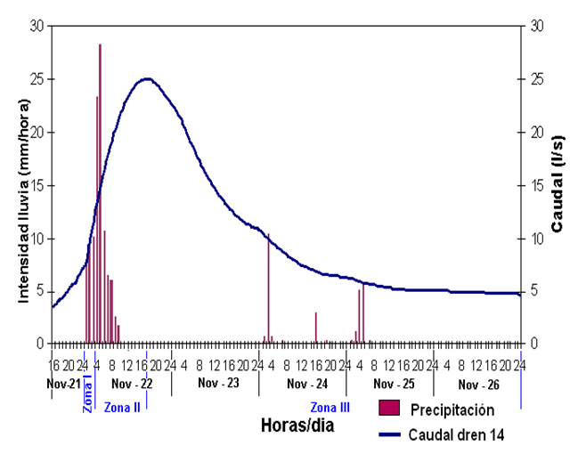

Es una gráfica que representa el caudal de un río o corriente en respuesta a una precipitación uniforme sobre una cuenca. Muestra cómo el flujo de agua cambia con el tiempo después de una tormenta o evento de lluvia.
(04/09/2024)
Semivariograma
Es una función matemática utilizada en geoestadística para mostrar la variabilidad espacial entre puntos de datos en un área geográfica. El semivariograma representa cómo la diferencia en los valores de las observaciones cambia a medida que aumenta la distancia entre ellos.
(11/09/2024)
Hietograma

Es una gráfica que muestra la intensidad de la precipitación en función del tiempo. A menudo, se utiliza para estudiar tormentas y su impacto sobre una región, mostrando la distribución temporal del volumen de lluvia.
(18/09/2024)
Hadley y Walker
Se refieren a las celdas de circulación atmosférica. La Celda de Hadley es una circulación que ocurre cerca del ecuador, mientras que la Celda de Walker es un patrón de circulación zonal sobre el Pacífico. Ambas son fundamentales para entender los patrones climáticos globales y fenómenos como El Niño y La Niña.
(25/09/2024)
Tormenta y Huracán no son lo mismo
Una tormenta se refiere a cualquier sistema meteorológico que involucra viento, lluvia, nieve, etc., mientras que un huracán es un tipo específico de tormenta tropical de alta intensidad con vientos extremadamente fuertes. La diferencia principal está en la magnitud y la clasificación de los vientos.
(02/10/2024)